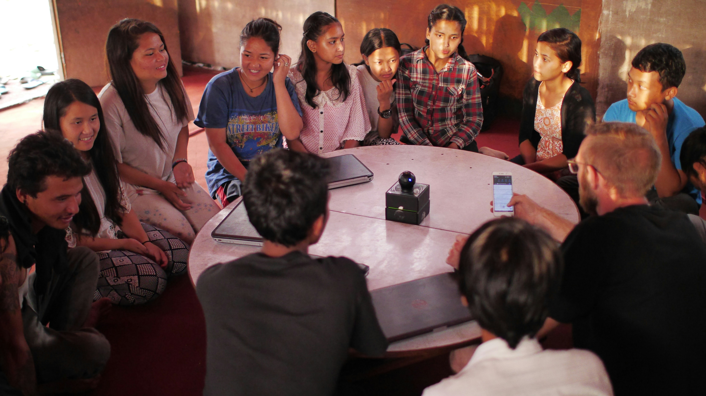

Práctica desde el segundo año
Trabajas en proyectos con organizaciones y comunidades, acompañado por docentes.

Un programa de 4 años que forma profesionales para trabajar con comunidades reales.
Métodos cuantitativos y cualitativos aplicados a proyectos desde el primer año.

Del diagnóstico a la evaluación: gestiona iniciativas sociales de principio a fin.
Abrimos la inscripción para el nuevo programa académico de la Facultad. Está pensado para quienes quieren entender los problemas de la sociedad y actuar sobre ellos.
Trabajas en proyectos con organizaciones y comunidades, acompañado por docentes.
Sociología, antropología, economía y gestión pública en un mismo plan de estudios.
Podrás trabajar en gobiernos locales, ONG, consultoras y organismos de desarrollo.
Pide información sobre admisión, becas y fechas de inicio.